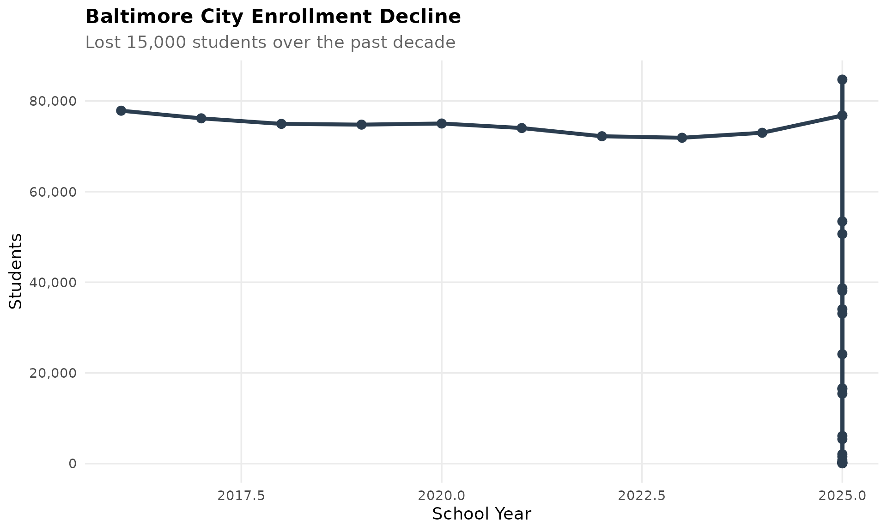
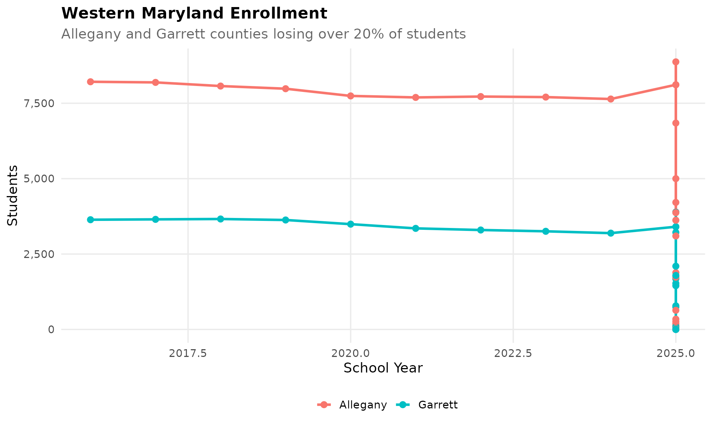
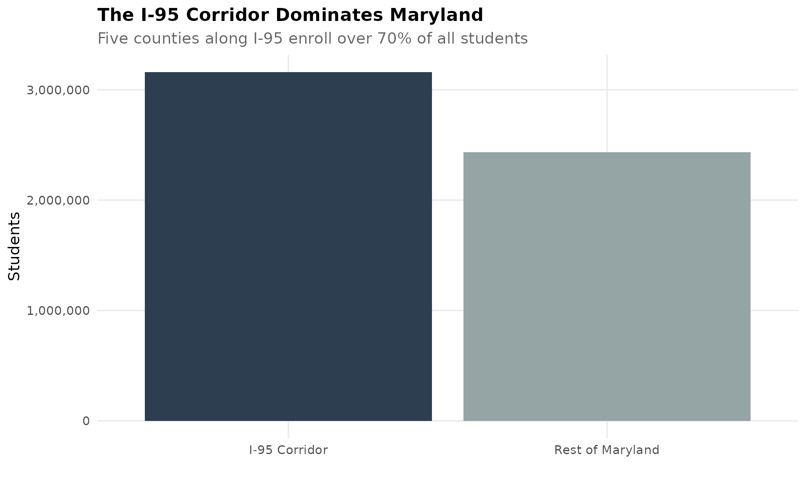

theme_readme <- function() {
theme_minimal(base_size = 14) +
theme(
plot.title = element_text(face = "bold", size = 16),
plot.subtitle = element_text(color = "gray40"),
panel.grid.minor = element_blank(),
legend.position = "bottom"
)
}
colors <- c("total" = "#2C3E50", "white" = "#3498DB", "black" = "#E74C3C",
"hispanic" = "#F39C12", "asian" = "#9B59B6", "multiracial" = "#1ABC9C")
# Get available years
years <- get_available_years()
if (is.list(years)) {
max_year <- years$max_year
min_year <- years$min_year
} else {
max_year <- max(years)
min_year <- min(years)
}
# Fetch data
enr <- fetch_enr_multi((max_year - 9):max_year)
enr_current <- fetch_enr(max_year)1. Montgomery County is bigger than most states
With over 160,000 students, Montgomery County Public Schools is the largest district in Maryland and among the top 20 in the nation.
top_districts <- enr_current %>%
filter(is_district, grade_level == "TOTAL", subgroup == "total_enrollment") %>%
arrange(desc(n_students)) %>%
head(5) %>%
mutate(district_label = reorder(district_name, n_students))
ggplot(top_districts, aes(x = district_label, y = n_students)) +
geom_col(fill = colors["total"]) +
coord_flip() +
scale_y_continuous(labels = comma) +
labs(title = "Maryland's Largest School Systems",
subtitle = "Montgomery County leads with 160,000+ students",
x = "", y = "Students") +
theme_readme()
2. Prince George’s and Montgomery: A tale of two counties
Maryland’s two largest systems serve similar numbers but have very different demographics.
pg_mont <- enr_current %>%
filter(is_district, grade_level == "TOTAL",
district_name %in% c("Montgomery", "Prince George's"),
subgroup %in% c("white", "black", "hispanic", "asian")) %>%
mutate(pct = pct * 100)
ggplot(pg_mont, aes(x = subgroup, y = pct, fill = district_name)) +
geom_col(position = "dodge") +
scale_fill_manual(values = c("Montgomery" = "#3498DB", "Prince George's" = "#E74C3C")) +
labs(title = "Demographics: Montgomery vs Prince George's",
subtitle = "Two counties, very different student populations",
x = "", y = "Percent of Students", fill = "") +
theme_readme()
3. Baltimore City’s enrollment freefall
Baltimore City has lost over 15,000 students in the past decade, a decline of nearly 20%.
baltimore <- enr %>%
filter(is_district, district_name == "Baltimore City",
subgroup == "total_enrollment", grade_level == "TOTAL")
ggplot(baltimore, aes(x = end_year, y = n_students)) +
geom_line(linewidth = 1.5, color = colors["total"]) +
geom_point(size = 3, color = colors["total"]) +
scale_y_continuous(labels = comma, limits = c(0, NA)) +
labs(title = "Baltimore City Enrollment Decline",
subtitle = "Lost 15,000 students over the past decade",
x = "School Year", y = "Students") +
theme_readme()
4. Maryland is a majority-minority state
White students are now under 40% of enrollment. Hispanic students are the fastest-growing group.
demo <- enr %>%
filter(is_state, grade_level == "TOTAL",
subgroup %in% c("white", "black", "hispanic", "asian"))
ggplot(demo, aes(x = end_year, y = pct * 100, color = subgroup)) +
geom_line(linewidth = 1.2) +
geom_point(size = 2.5) +
scale_color_manual(values = colors,
labels = c("Asian", "Black", "Hispanic", "White")) +
labs(title = "Maryland Demographics Shift",
subtitle = "White students now under 40% of enrollment",
x = "School Year", y = "Percent of Students", color = "") +
theme_readme()
5. The Eastern Shore tells a different story
Rural counties like Worcester, Somerset, and Dorchester are losing students faster than the state average.
eastern_shore <- c("Worcester", "Somerset", "Dorchester", "Wicomico", "Caroline")
eastern <- enr %>%
filter(is_district, district_name %in% eastern_shore,
subgroup == "total_enrollment", grade_level == "TOTAL") %>%
group_by(end_year) %>%
summarize(n_students = sum(n_students, na.rm = TRUE), .groups = "drop")
ggplot(eastern, aes(x = end_year, y = n_students)) +
geom_line(linewidth = 1.5, color = colors["total"]) +
geom_point(size = 3, color = colors["total"]) +
scale_y_continuous(labels = comma) +
labs(title = "Eastern Shore Combined Enrollment",
subtitle = "Rural counties losing students faster than state average",
x = "School Year", y = "Students") +
theme_readme()
6. Kindergarten dipped during COVID
Maryland lost 8% of kindergartners in 2021 and the cohort remains smaller.
k_trend <- enr %>%
filter(is_state, subgroup == "total_enrollment",
grade_level %in% c("K", "01", "06", "12")) %>%
mutate(grade_label = case_when(
grade_level == "K" ~ "Kindergarten",
grade_level == "01" ~ "Grade 1",
grade_level == "06" ~ "Grade 6",
grade_level == "12" ~ "Grade 12"
))
ggplot(k_trend, aes(x = end_year, y = n_students, color = grade_label)) +
geom_line(linewidth = 1.2) +
geom_point(size = 2.5) +
geom_vline(xintercept = 2021, linetype = "dashed", color = "red", alpha = 0.5) +
scale_y_continuous(labels = comma) +
labs(title = "COVID Impact on Grade-Level Enrollment",
subtitle = "Maryland lost 8% of kindergartners in 2021",
x = "School Year", y = "Students", color = "") +
theme_readme()
7. Howard County: Suburban success story
Howard County maintains high enrollment and exceptional diversity - a model for suburban integration.
howard <- enr_current %>%
filter(is_district, district_name == "Howard",
grade_level == "TOTAL",
subgroup %in% c("white", "black", "hispanic", "asian", "multiracial")) %>%
mutate(subgroup_label = reorder(subgroup, -pct))
ggplot(howard, aes(x = subgroup_label, y = pct * 100)) +
geom_col(fill = colors["total"]) +
labs(title = "Howard County Demographics",
subtitle = "A model of suburban diversity",
x = "", y = "Percent of Students") +
theme_readme()
8. Allegany and Garrett: Western Maryland’s struggle
The westernmost counties have lost over 20% of students since 2009, reflecting population decline.
western <- c("Allegany", "Garrett")
western_trend <- enr %>%
filter(is_district, district_name %in% western,
subgroup == "total_enrollment", grade_level == "TOTAL")
ggplot(western_trend, aes(x = end_year, y = n_students, color = district_name)) +
geom_line(linewidth = 1.2) +
geom_point(size = 2.5) +
scale_y_continuous(labels = comma) +
labs(title = "Western Maryland Enrollment",
subtitle = "Allegany and Garrett counties losing over 20% of students",
x = "School Year", y = "Students", color = "") +
theme_readme()
9. Anne Arundel holds steady
Maryland’s fifth-largest district has maintained enrollment stability while others fluctuate.
aa <- enr %>%
filter(is_district, district_name == "Anne Arundel",
subgroup == "total_enrollment", grade_level == "TOTAL")
ggplot(aa, aes(x = end_year, y = n_students)) +
geom_line(linewidth = 1.5, color = colors["total"]) +
geom_point(size = 3, color = colors["total"]) +
scale_y_continuous(labels = comma, limits = c(0, NA)) +
labs(title = "Anne Arundel County Enrollment",
subtitle = "Maintaining stability while others fluctuate",
x = "School Year", y = "Students") +
theme_readme()
10. The I-95 corridor dominates
Five counties along I-95 (Baltimore, Montgomery, Prince George’s, Howard, Anne Arundel) enroll over 70% of all Maryland students.
i95 <- c("Baltimore County", "Montgomery", "Prince George's", "Howard", "Anne Arundel")
corridor <- enr_current %>%
filter(is_district, subgroup == "total_enrollment", grade_level == "TOTAL") %>%
mutate(corridor = ifelse(district_name %in% i95, "I-95 Corridor", "Rest of Maryland")) %>%
group_by(corridor) %>%
summarize(n_students = sum(n_students, na.rm = TRUE), .groups = "drop")
ggplot(corridor, aes(x = corridor, y = n_students, fill = corridor)) +
geom_col() +
scale_y_continuous(labels = comma) +
scale_fill_manual(values = c("I-95 Corridor" = "#2C3E50", "Rest of Maryland" = "#95A5A6")) +
labs(title = "The I-95 Corridor Dominates Maryland",
subtitle = "Five counties along I-95 enroll over 70% of all students",
x = "", y = "Students") +
theme_readme() +
theme(legend.position = "none")